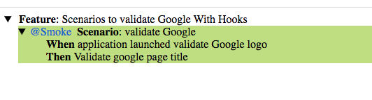

When we want to perform specific actions for every scenario or step like:
Launch Application
Initializa Test Data Table
Initializa Test Report
Close Application
But we don't write these steps in Feature file are called Hooks.
As an Examples :
@Before
@After
@BeforeStep
@AfterStep
Consider below feature file scenario , where no steps are written for launching and closing the application.
Feature: Scenarios to validate Google With Hooks
@Smoke
Scenario: validate Google
When application launched validate Google logo
Then Validate google page title
Step definition file as :
package stepDefinition; import io.cucumber.java.After; import io.cucumber.java.Before; import io.cucumber.java.en.Then; import io.cucumber.java.en.When; import org.openqa.selenium.By; import org.openqa.selenium.WebDriver; import org.openqa.selenium.chrome.ChromeDriver; public class StepDeftest1 { WebDriver driver = null; @Before public void launchApplication() { // Launching Google Application System.setProperty("webdriver.chrome.driver","/Users/hellouser/Downloads/chromedriver"); driver = new ChromeDriver(); driver.manage().window().maximize(); driver.get("https://www.google.com"); } @When("application launched validate Google logo") public void application_launched_validate_Google_logo() { driver.findElement(By.id("hplogo")).isDisplayed(); } @Then("Validate google page title") public void Validate_google_page_title() { // Checking for page title.. if(driver.getTitle().equals("Google")) { System.out.println("Application Pge Title is Pass"); } } @After public void close_Application() { // Close the application driver.quit(); } }
Test Report is :
